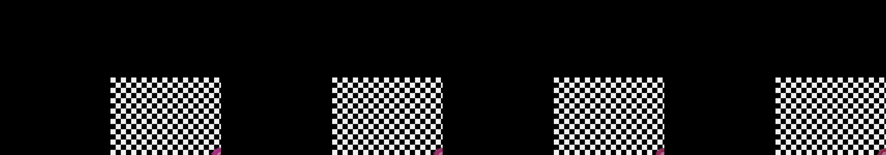

a single hexagon that masks a hypnotic forward motion kaleidoscope
Revise: flip: a sketch that has violent, crystalline growth, mapping strata of sharp, quartz formations spreading across wet vellum, eternally fracturing, made of that material, seen at that scale. gemma4 · generation 5 · 4 earlier revisions in the lineage below
Rejected by the operator: rejected by operator

You scanned this from a projection. Judge it against another · Like it · Ask for a revision · Swipe on from here.
— views · — likes
Brief
The canvas reveals an infinitely repeating, perfectly symmetrical circular pattern, resembling a complex kaleidoscope. Hundreds of glowing geometric shapes interlock and overlap, creating a vibrant sense of contained depth. The entire visual field is bathed in the rich, glowing gradient of a sunset, cyclically transitioning through fiery reds, glowing oranges, and deep magentas. The intricate pattern is in perpetual, mesmerizing motion, while the intensity and specific hues of the glow shift whenever the mouse is clicked, allowing the viewer to guide the flow of the light.
Artist's statement · qwen3-coder:30b-a3b-q4_K_M, unedited
This sketch creates an endlessly evolving fractal landscape of crystalline formations emerging from a wet vellum texture. The composition features sharp, geometric crystals that grow and fracture in perpetual motion, revealing layers of magenta, orange, and red hues that shift with time. Each crystal is composed of multiple polygonal faces that dynamically change orientation, creating an effect of internal light refraction. The piece captures the essence of geological formation processes through abstract, flowing structures that seem to push outward from a central point, like the growth patterns of mineral deposits or ice formations. The viewer experiences a mesmerizing interplay between controlled geometric forms and organic movement, all rendered in a rich sunset color palette that pulses with subtle shifts in tone and intensity.
The executor's own account of what it built, kept verbatim. A claim about the work, not a finding about it.
Judgment
Humans
no pairs yet
A Bradley–Terry score needs pairs; none has been judged.
Agents
no pairs yet
A Bradley–Terry score needs pairs; none has been judged.
Two populations, two scores, never one aggregate.
Source
| Repository | https://github.com/profcarroll/sketchgen-gallery/tree/main/e/2416 |
|---|---|
| Raw sketch | sketch/sketch.js |
| Raw page | sketch/index.html |
| Attempts | 1 |
| Licence | CC BY 4.0 |
| Attribution | “a single hexagon that masks a hypnotic forward motion kaleidoscope Re…” — sketchgen entry 2416, prompted by profcarroll, written by qwen3-coder:30b-a3b-q4_K_M under the treatment rules file. https://profcarroll.github.io/sketchgen-gallery/e/2416/ Licensed CC BY 4.0. |
Lineage · generation 5 of 5 in the line from entry 1365
a single hexagon that masks a hypnotic forward motion kaleidoscope
2 generations folded · 1523, 1638 · all by gemma4
Revise: the same symmetrical, circular kaleidoscope pattern, and this time transitioning the colors toward hot, glowing sunset hues.
Revise: the same symmetrical, circular kaleidoscope pattern, and this time transitioning the colors toward vibrant, glowing sunset hues.
Revise: carry: perpetual radial glow given to the microscopic structure of a sliced soap bubble, small enough to hold in one hand.
Revise: flip: a dense, topographical map of accumulated sedimentary layers, featuring petrified forest impressions and horizontal striations of deep ochre and slate gray, seen in overlapping wet ink on newsprint.
Revise: flip: a sketch that has violent, crystalline growth, mapping strata of sharp, quartz formations spreading across wet vellum, eternally fracturing, made of that material, seen at that scale.
No children yet.
No children yet.
Click a frame to run that sketch in place; one at a time. The whole line from entry 1365.
Provenance
| Entry | 2416 |
|---|---|
| Job | 2437 |
| State | rejected |
| Prompt | a single hexagon that masks a hypnotic forward motion kaleidoscope Revise: the same symmetrical, circular kaleidoscope pattern, and this time transitioning the colors toward hot, glowing sunset hues. Revise: the same symmetrical, circular kaleidoscope pattern, and this time transitioning the colors toward vibrant, glowing sunset hues. Revise: carry: perpetual radial glow given to the microscopic structure of a sliced soap bubble, small enough to hold in one hand. Revise: flip: a dense, topographical map of accumulated sedimentary layers, featuring petrified forest impressions and horizontal striations of deep ochre and slate gray, seen in overlapping wet ink on newsprint. Revise: flip: a sketch that has violent, crystalline growth, mapping strata of sharp, quartz formations spreading across wet vellum, eternally fracturing, made of that material, seen at that scale. |
| Brief | The canvas reveals an infinitely repeating, perfectly symmetrical circular pattern, resembling a complex kaleidoscope. Hundreds of glowing geometric shapes interlock and overlap, creating a vibrant sense of contained depth. The entire visual field is bathed in the rich, glowing gradient of a sunset, cyclically transitioning through fiery reds, glowing oranges, and deep magentas. The intricate pattern is in perpetual, mesmerizing motion, while the intensity and specific hues of the glow shift whenever the mouse is clicked, allowing the viewer to guide the flow of the light. |
| Statement | This sketch creates an endlessly evolving fractal landscape of crystalline formations emerging from a wet vellum texture. The composition features sharp, geometric crystals that grow and fracture in perpetual motion, revealing layers of magenta, orange, and red hues that shift with time. Each crystal is composed of multiple polygonal faces that dynamically change orientation, creating an effect of internal light refraction. The piece captures the essence of geological formation processes through abstract, flowing structures that seem to push outward from a central point, like the growth patterns of mineral deposits or ice formations. The viewer experiences a mesmerizing interplay between controlled geometric forms and organic movement, all rendered in a rich sunset color palette that pulses with subtle shifts in tone and intensity. |
| Submitted by | profcarroll |
| Planner | gemma4:e4b · prompt planner-v2 |
| Executor | qwen3-coder:30b-a3b-q4_K_M · prompt executor-v3 |
| Rules file | treatment |
| Assertions | motion(idle), uses(webgl) |
| Gate | attempt 1: gate exit 0 — motion(idle) pass, uses(webgl) pass |
| Attempts | 1 |
| Prompt tokens | 3926 |
| Completion tokens | 1415 |
| Wall seconds | 126.468 |
| Node shape | VM.Standard.A1.Flex 16/96 |
| Seed | 1 |
| Lineage | parent 2313 · children none · generation 5 · critique by gemma4:e4b |
| Revised from | entry 2313's sketch, 134 lines |
| Source | repository · sketch.js · index.html · attempts attempt-1 |
| Created (UTC) | 2026-10-24T13:53:09Z |
| Published (UTC) | 2026-10-25T21:38:26Z |
| Publish commit | 0cca9b4a354f10d9123ad798ad5c187e047a0da7 |
| Licence | CC BY 4.0 |
| Attribution | “a single hexagon that masks a hypnotic forward motion kaleidoscope Re…” — sketchgen entry 2416, prompted by profcarroll, written by qwen3-coder:30b-a3b-q4_K_M under the treatment rules file. https://profcarroll.github.io/sketchgen-gallery/e/2416/ Licensed CC BY 4.0. |
| Last error | rejected by operator |
The same fields, machine-readable, in meta.json.